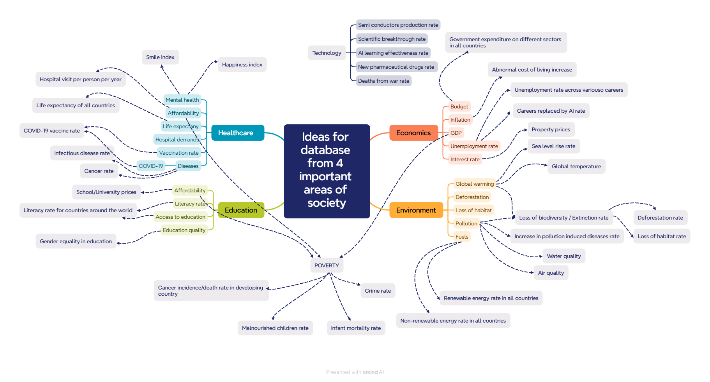

Research existing systems
I need to find some existing interactive information systems. I think CSO, Kaggle.com and Worlddata.info would be suitable because they are publicly available and have wide range of databases.
- CSO has is Ireland's national statistical institute, meaning the sources are highly reliable and relevant. Many detailed insights into Irish demographics, economic etc.
- Kaggle.com has many global datasets of diverse topics from data scientists across the globe. Kaggle’s datasets are customised by verified users and are usually clean.
- Worlddata.info is very reliable a comprehensive database for geographic, climatological and demographic data.
I will keep these 3 sources in consideration because they have:
- A wide variety
- Great quality, UI
- Visualisation (animated chart, slider, filter)
- Trustworthy
- Overall, they are one of the best and most popular interactive information systems
Decide on topic
I need to find a dataset from a few important areas of society such as healthcare, education, economics and environment. Here are a mindmap of ideas I thought about and their highlights:

Healthcare
- Medical personnels in demand in Ireland
- Greatly affect quality of life
- Relevant to everyone
Education
- Can analyse disparity across different countries
- Mostly relevant to young people
Economics
- Useful for making informed business decisions
- Affect low income/middle class significantly, and wealthy less
Environment
- Often overlooked but impacts everyone, including future generations. Failure to conserve the environment impacts ALL areas of society massively
I ultimately chose global warming to be most enticing for its worldwide significance. Research shows:
- Over 99.9% of peer-reviewed scientific papers agree that climate change is mainly caused by humans1.
- At 2°C of global warming, heat extremes would more often reach critical tolerance thresholds for agriculture and health.2
- 2023 had shattered every global record for temperature, with researchers firm in the conviction that our planet had seen its hottest average temperatures in at least 125,000 years3.
- Global warming’s devastating effects include disappearing islands, health crises, and ecosystem disruptions.4
| CSO (MTM06) | Kaggle.com | Worlddata.info | |
|---|---|---|---|
| Reliable | 5 | 4 | 5 |
| Relevance | 4 | 5 | 3 |
| Sufficient Size | 5 | 5 | 5 |
| Worldwide | 2 | 5 | 5 |
| Has some imperfections for cleaning (BR1) | 3 | 4 | 3 |
| Timeliness | 5 | 3 | 5 |
| Accessibility | 4 | 5 | 3 |
| Total | 28 | 31 | 29 |
I think the dataset from Kaggle.com is most suitable with score of 31. The Kaggle database is global, reliable (from reviews), relevant, of sufficient size, somewhat timely, but most importantly it has very clear and concise rows of data e.g. (2005/01/01, 12.5, 0.01, Spain) Therefore, I choose this dataset.
Conclusion
I think global warming is the topic that I “feel is important for society” and therefore I will create an interactive system that allows users to investigate recent trends in global temperature, with the objective of highlighting the extent to which the increase in global temperature is unprecedented.